Отделения
Филиал №7 ГВКГ им. Н.Н. Бурденко оказывает специализированную, в том числе высокотехнологичную, медицинскую помощь в стационарных и амбулаторных условиях. Коечная мощность — 450 коек круглосуточного пребывания.
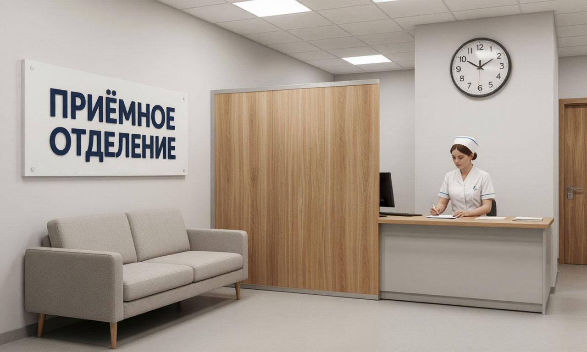
Приёмное отделение
Экстренная и плановая госпитализация
Приёмное отделение осуществляет круглосуточный приём пациентов по экстренным и неотложным показаниям, а также плановую госпитализацию по направлениям установленного образца. Отделение оснащено противошоковой палатой, перевязочной, кабинетом экспресс-диагностики. Время от момента поступления до начала лечебных мероприятий не превышает 30 минут.
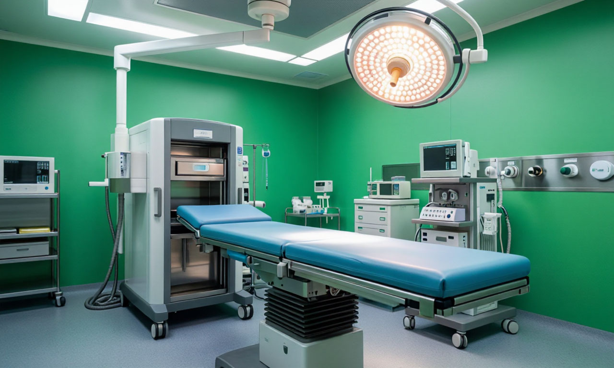
Хирургическое отделение
Включая гнойную хирургию
Хирургическое отделение выполняет полный спектр оперативных вмешательств на органах брюшной полости, грудной клетки, мягких тканях. Специализация отделения — лечение огнестрельных и минно-взрывных ранений, гнойно-септических осложнений, реконструктивные операции при послеоперационных вентральных грыжах. Ежегодно выполняется более 2000 операций.
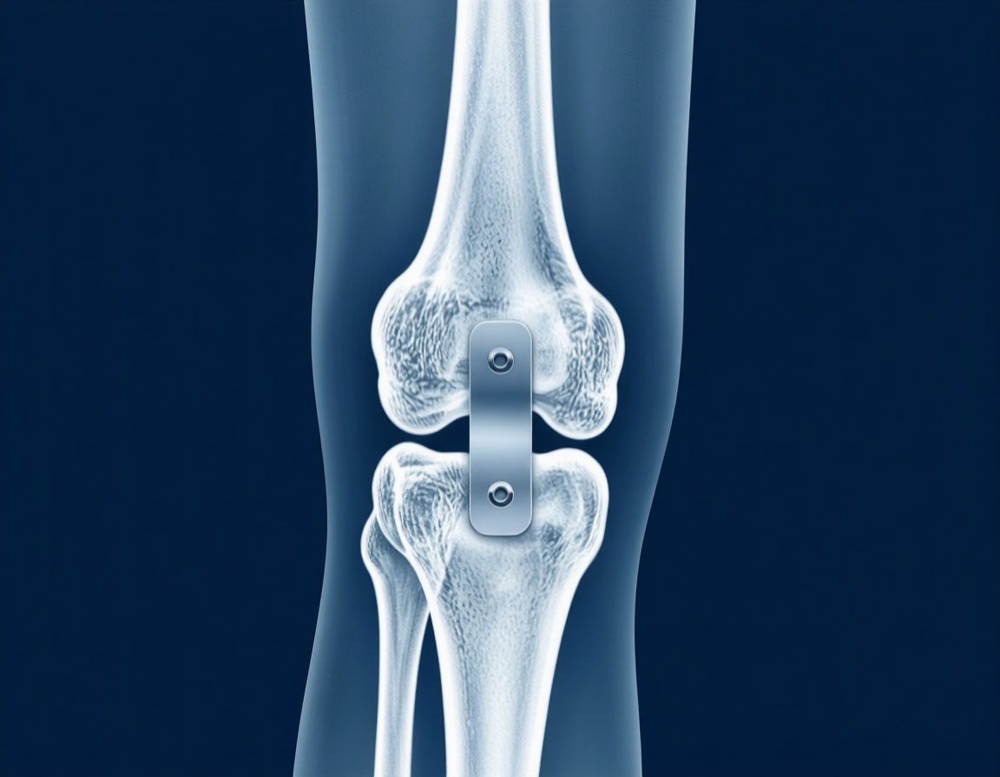
Травматолого-ортопедическое отделение
Эндопротезирование, остеосинтез, артроскопия
Отделение специализируется на лечении переломов костей любой сложности с применением современных методик накостного и внутрикостного остеосинтеза. Выполняется эндопротезирование тазобедренного, коленного, плечевого суставов. Особое направление — артроскопическая хирургия крупных суставов. 60 коек, две операционные с ламинарным потоком.
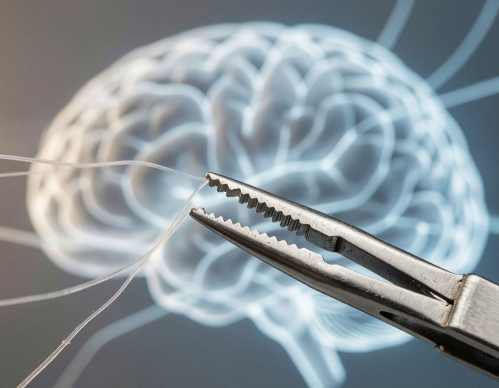
Нейрохирургическое отделение
Операции на головном и спинном мозге, микрохирургия нервов
Отделение оказывает помощь при черепно-мозговых травмах, травмах позвоночника и спинного мозга, опухолях нервной системы. Оснащено операционным микроскопом, нейронавигационной системой. Ежегодно выполняется более 800 операций.
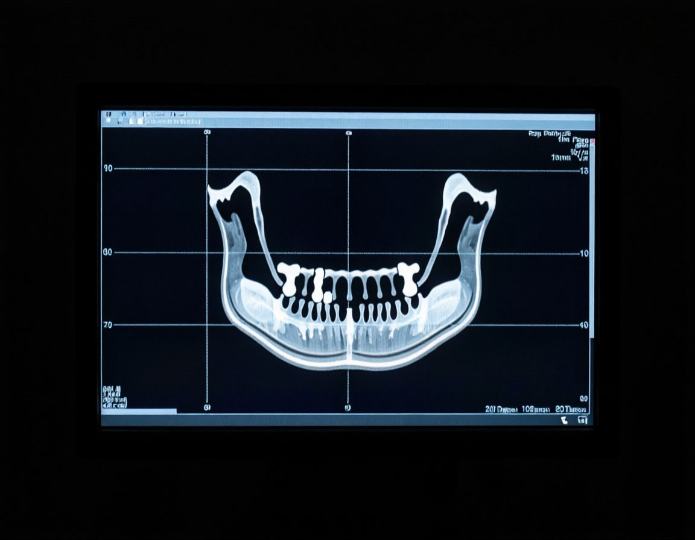
Отделение челюстно-лицевой хирургии
Реконструктивные операции, дентальная имплантация
Отделение выполняет реконструктивно-восстановительные операции при травмах лица и челюстей, дефектах костей лицевого скелета. Проводится дентальная имплантация, костная пластика. Приоритетное направление — устранение последствий боевых травм челюстно-лицевой области.
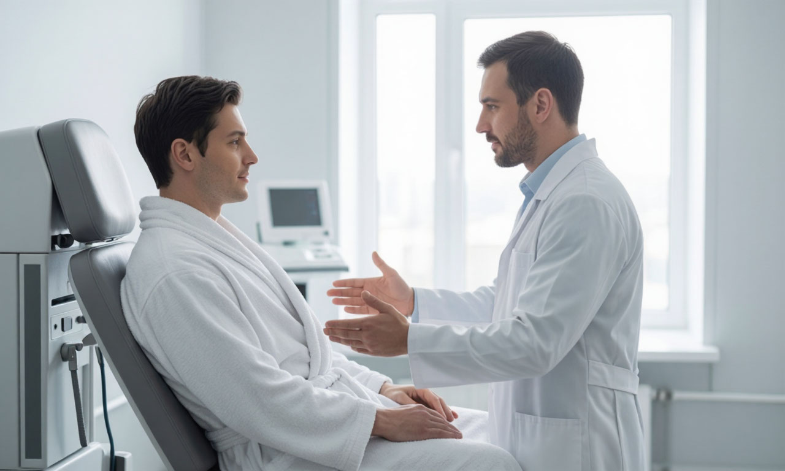
Отделение медицинской реабилитации и физиотерапии
Восстановление после травм, протезирование, психологическая помощь
Отделение реализует индивидуальные программы реабилитации после хирургических вмешательств, травм, протезирования. Включает зал ЛФК, механотерапию, физиотерапию, кабинет подбора протезов, психологическую помощь. Особое внимание — реабилитации после ампутаций конечностей.
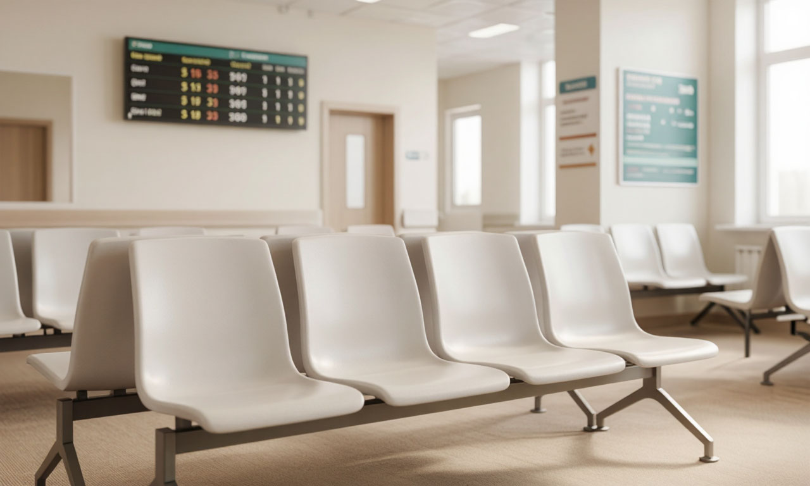
Амбулаторно-поликлиническое отделение
Консультации специалистов, диспансеризация, профилактические осмотры
Приём по 18 врачебным специальностям. Диспансерное наблюдение военнослужащих, ветеранов, членов их семей. Запись через регистратуру или электронную форму на сайте.
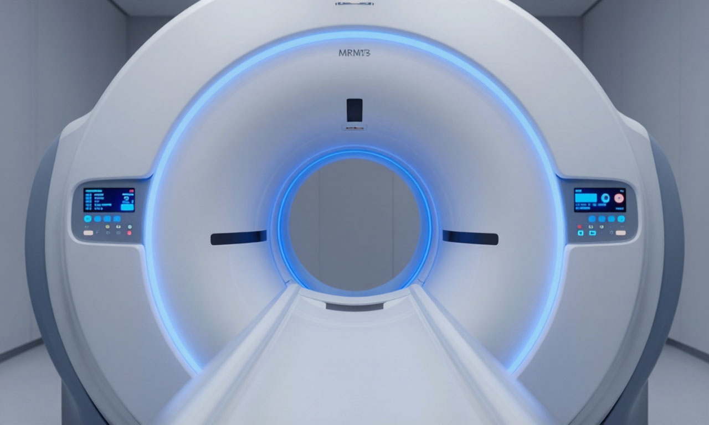
Диагностические службы
Лаборатория, лучевая диагностика, функциональная диагностика
Диагностическая база включает: МРТ 3 Тесла, мультиспиральный КТ 128 срезов, цифровую рентгенографию, УЗИ экспертного класса, клинико-биохимическую лабораторию полного цикла.
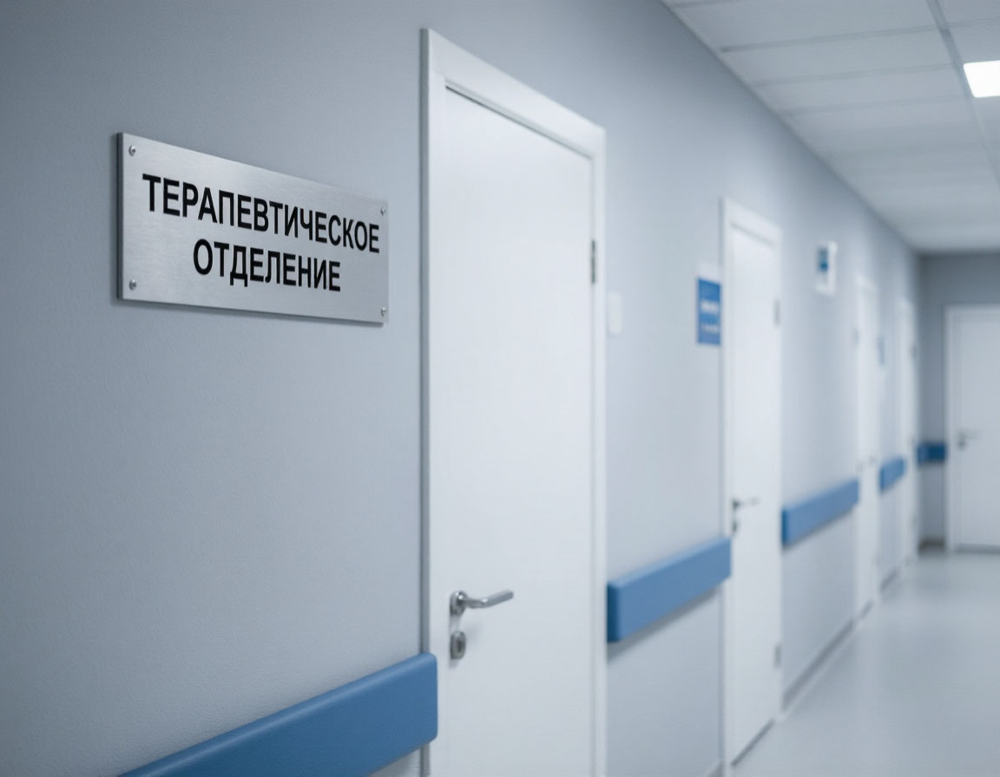
Терапевтическое отделение
Лечение заболеваний внутренних органов
Терапевтическое отделение занимается диагностикой и лечением широкого спектра заболеваний внутренних органов: сердечно-сосудистой, дыхательной, пищеварительной, эндокринной систем. Проводятся комплексные профилактические осмотры и диспансеризация.
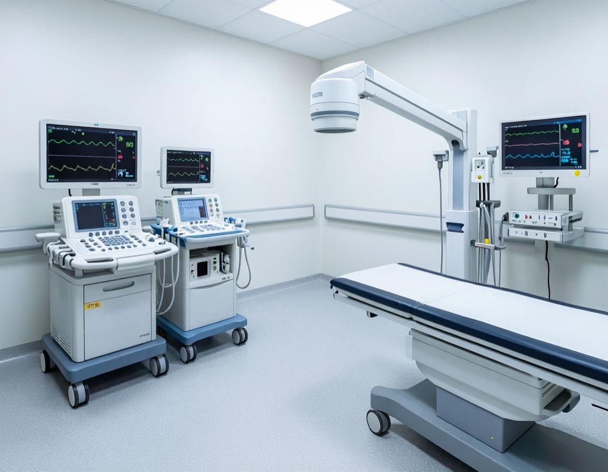
Кардиологическое отделение
Диагностика и лечение сердечно-сосудистых заболеваний
Кардиологическое отделение оснащено оборудованием для электрокардиографии, эхокардиографии, суточного мониторирования. Проводится терапия артериальной гипертензии, ишемической болезни сердца, нарушений ритма.
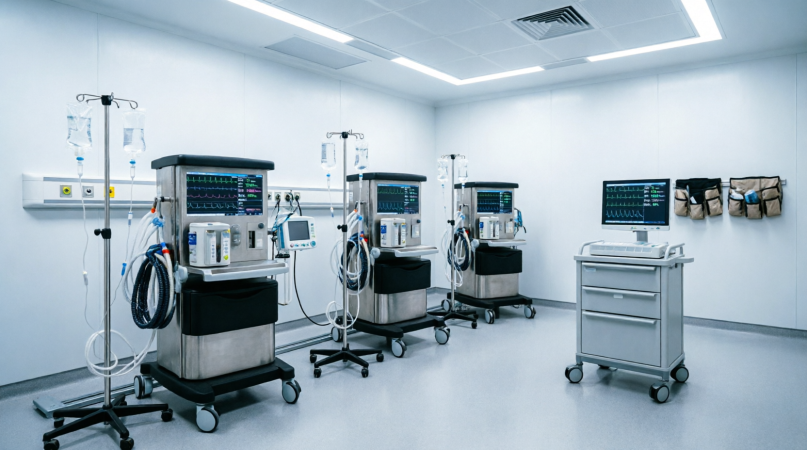
Отделение анестезиологии и реанимации
Анестезиологическое обеспечение и интенсивная терапия
Отделение обеспечивает анестезиологическое пособие при хирургических вмешательствах, проводит интенсивную терапию пациентов в критических состояниях. Оснащено современными наркозно-дыхательными аппаратами и системами мониторинга жизненных функций.
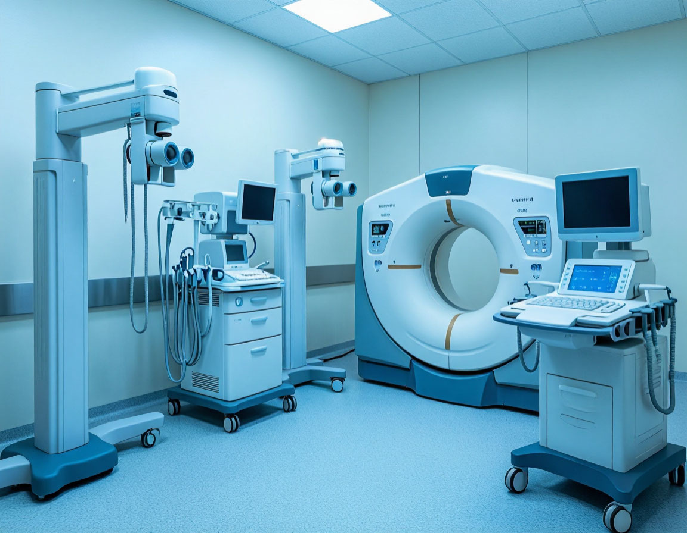
Отделение функциональной диагностики
Инструментальные исследования состояния органов и систем
Выполняет электрокардиографию, суточное мониторирование ЭКГ и артериального давления, эхокардиографию, спирометрию, электроэнцефалографию и другие исследования, необходимые для постановки точного диагноза.
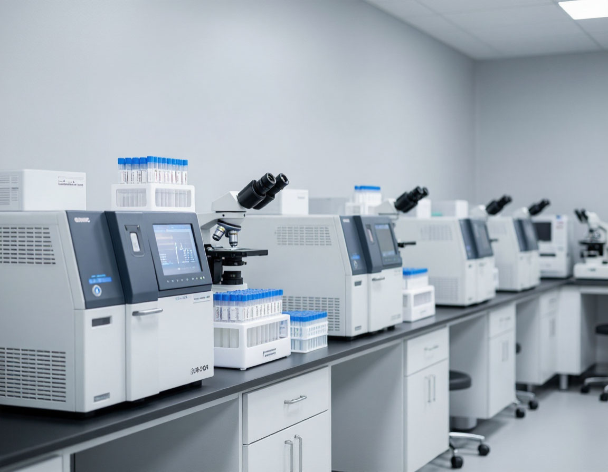
Клинико-диагностическая лаборатория
Полный спектр лабораторных анализов
Лаборатория выполняет общеклинические, биохимические, иммунологические, микробиологические исследования. Оборудование экспертного класса позволяет получать результаты с высокой точностью в кратчайшие сроки.
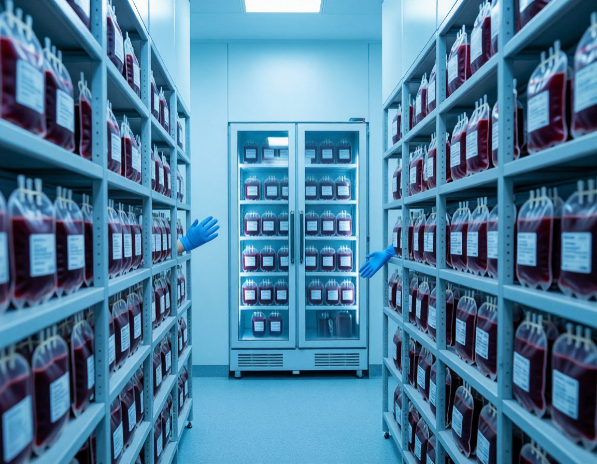
Отделение переливания крови
Трансфузионная терапия
Обеспечивает хранение и выдачу компонентов крови, проведение плазмафереза и других методов трансфузионной терапии. Строго соблюдаются все меры безопасности и контроля качества.
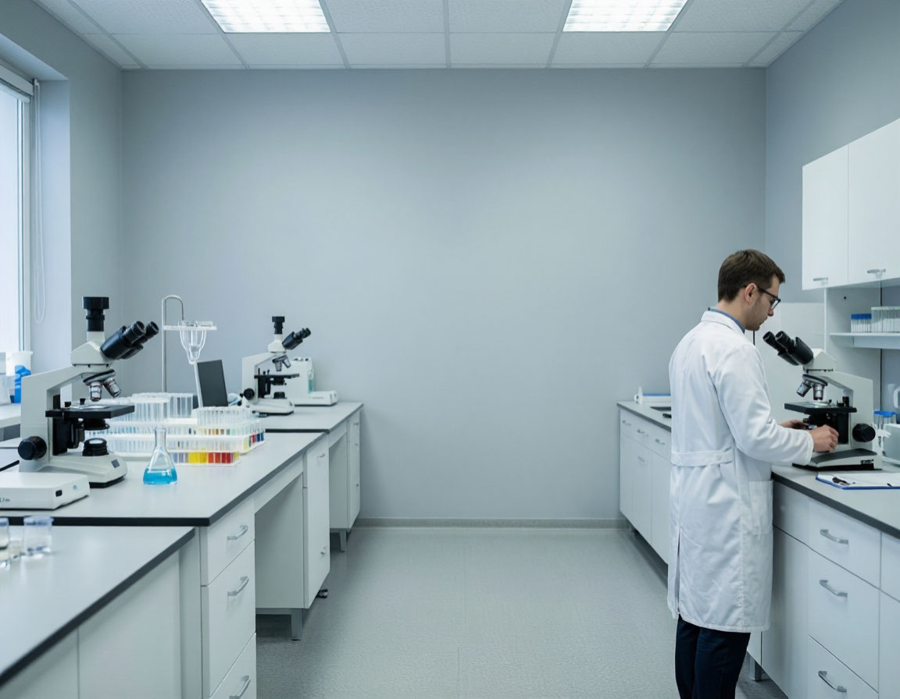
Патологоанатомическое отделение
Прижизненная и посмертная диагностика
Проводит гистологические исследования операционного и биопсийного материала, аутопсийную диагностику. Результаты используются для контроля качества лечебной работы и уточнения диагнозов.
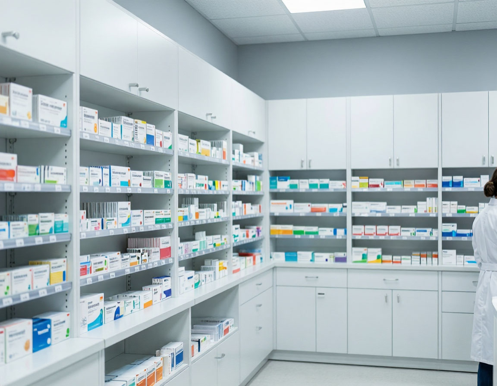
Аптека
Обеспечение лекарственными препаратами и медицинскими изделиями
Аптека осуществляет закупку, хранение и отпуск лекарственных средств и расходных материалов для всех подразделений госпиталя. Контролирует соблюдение правил хранения и сроков годности.
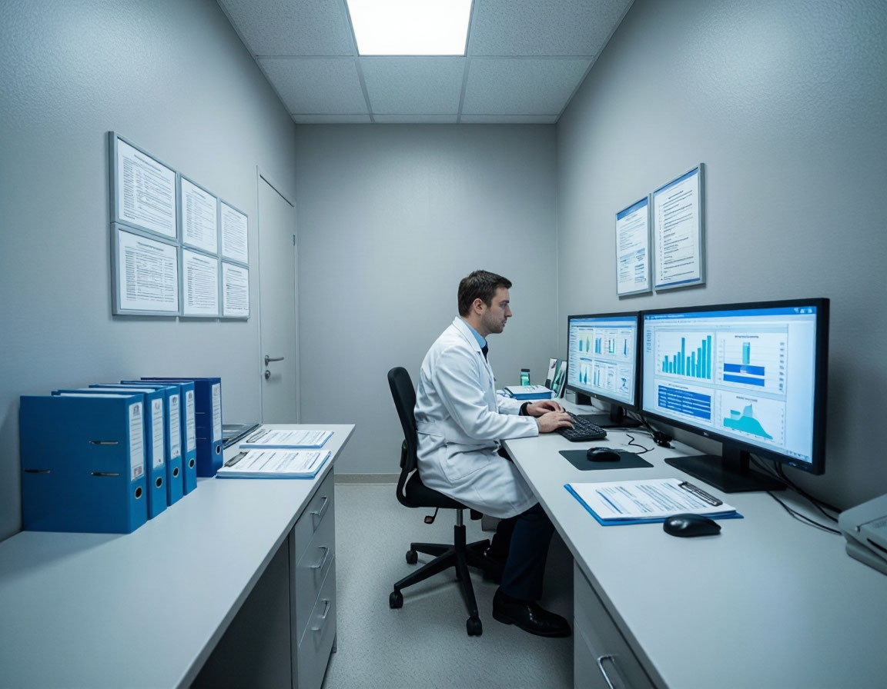
Отделение медицинской статистики
Сбор и обработка медицинских данных
Обеспечивает учёт и отчётность медицинской деятельности, анализ заболеваемости, подготовку статистических форм. Информация используется для планирования и улучшения качества медицинской помощи.